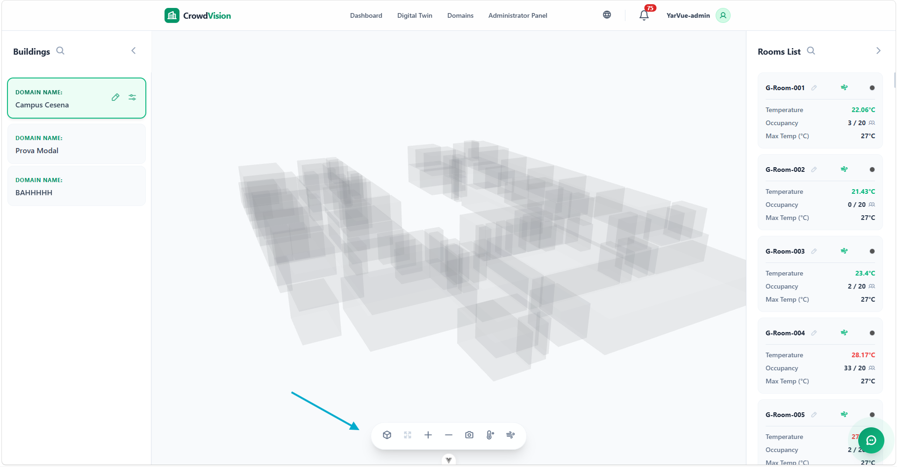
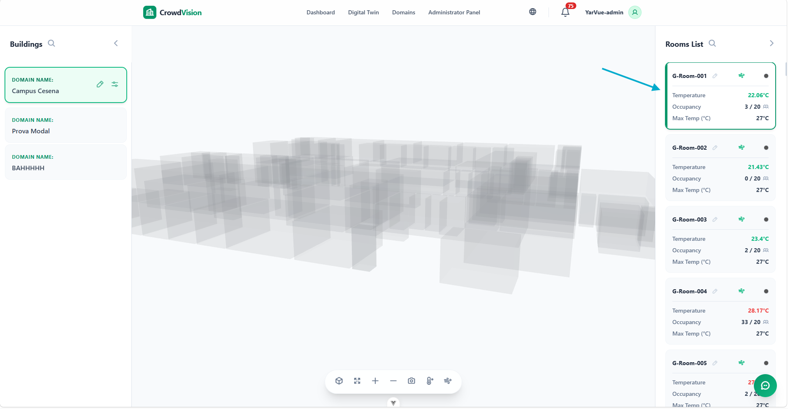

/
User Guide
On this page
The Digital Twin
The Digital Twin view is an interactive 3D model of your buildings. You can fly around the model, inspect rooms, watch live occupancy and temperature, and — with the right permissions — edit the spatial configuration.

Figure 1 — The digital twin renders every room of the selected building in 3D.
Moving around: the control panel
The control panel inside the viewer holds the navigation tools.
| Control | What it does |
|---|---|
| Reset View | Return the camera to its default position, centred on the building. |
| Zoom In / Out | Move the camera closer or further away. |
| Panorama Mode | Auto-rotate smoothly around the building for a hands-free 360° overview. |
| Focus on Room | Isolate the selected room and move the camera to inspect it. |
| Temperature Mode | Colour rooms by live temperature, from cool blues to warm reds. |

Figure 2 — The control panel: reset, zoom, panorama, focus, and temperature colouring.
Left menu: buildings and floors
- Select Building — choose which building to view (the list reflects your domains).
- Floor Selection — show a single level, or All Floors for the whole structure.
- Register Building — administrators open the Register Building modal to upload a building’s JSON layout and set its name, thresholds, and per-room capacity before saving. The system assigns a unique id automatically. See Upload a Digital Twin.
Right menu: rooms and details
- Search Room — find a room by name or id.
- Room List — a scrollable list of the rooms in view.
- Selection & Details — click a room (in the list or the 3D model) to highlight it and open its live readings.

Figure 3 — Selecting a room opens its details and live sensor readings.
Editing rooms
Administrators and staff can keep the twin in sync with the real space. Select a room and choose Edit Room to configure:
| Field | Meaning |
|---|---|
| Room Name | The display name (e.g. “Physics Lab”). |
| Room Identifier | The system id (read-only; set from the uploaded model). |
| Capacity | The maximum safe occupancy, which drives the occupancy statuses. |
| Max Temp (°C) | The room’s upper temperature threshold; exceeding it can trigger alerts. |
| Theme Color | The room’s default colour in standard 3D mode. |

Figure 4 — Edit Room configures a room’s name, capacity, temperature limit, and colour.
Editing building defaults
Authorized users can also edit a whole building via Edit Building:
- Building Name — update the display name.
- Global Max Temp (°C) — a default temperature limit for the building. A room without its own limit inherits this value.
Changes at the building level sync immediately across the 3D model and the dashboard analytics.